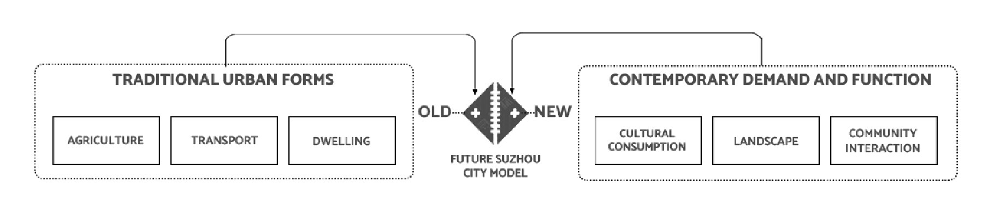
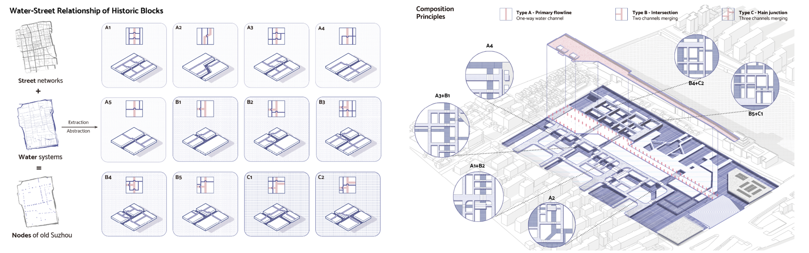
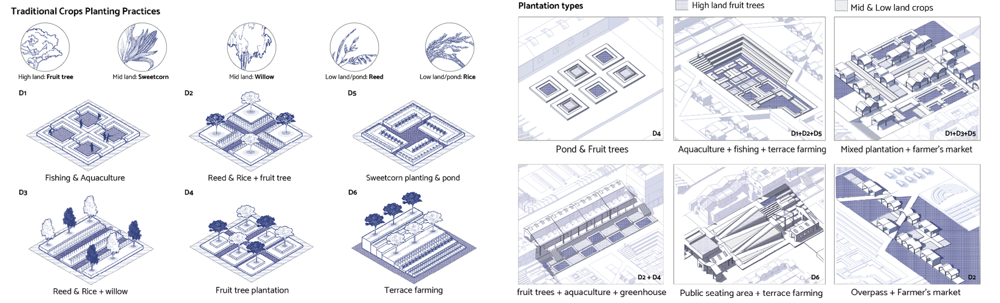

THE STITCHES | MORPHOLOGICAL URBANISM

This project attempted to reconcile the conflicts between the preservation and redevelopment of old city legacies. Suzhou's unparalleled historic and aesthetic values are reflected in the built environment. However, rapid urbanization has brought issues of polder field abandonment, water network fraqmentation, and social-spatial segregation between the well-preserved core and highly modernized peripheries.
Tourist and local assets at the old city boundary can be used to as the stitches. The morpholoqical features of agriculture, transportation, and housing in Suzhou's old city are reconfiqured into contemporary forms. Based on the demand space of diverse social groups, a masterplan and seven thematic clusters are designed to promote physical and social connection and engage local communities.

Suzhou Caoxieshan, one of the earliest rice paddy fields, and the Pogangdu terrace canal played vital roles in establishing Suzhou as a Southern grain base. However, rapid urban expansion encroached on the agriculture and aquaculture fields along Taihu Lake, forcing many farmers to leave their lands.
The construction of the Grand Canal during the Sui Dynasty contributed to Suzhou's distinctive land-and-water double chessboard pattern. This pattern facilitated accessibility and shaped the city's unique streetscapes. However, the rise of railways, the decline of canals, and the emergence of highways and man-made waterways disrupted this pattern, leading to the fragmentation of internal water networks.
Suzhou's traditional courtyard housing, exemplified by Deng's Mansion in Cangqiaobang, became renowned for its architectural and cultural excellence. Unfortunately, the redevelopment of Suzhou Industrial Park, dominated by skyscrapers, large-scale public buildings, and modernist designs, resulted in the loss of traditional characters. Simultaneously, the old city core has been completely preserved without adaptation or densification, leading to inconsistencies in cityscapes.
The large-scale skyline projects in Suzhou Industrial Park, such as Jinji Lake and Dushu Lake, focused on creating new landmarks at the waterfront but neglected the historical and cultural significance of water-street relationships. The government's initiatives to conserve the old city and regenerate tourist-oriented areas like Pingjiang Street revolved around promoting tourist-oriented commodity consumption instead of experiential consumption. Failing to achieve a balance between economic viability and the aim to preserve and consolidate the city's cultural identity—the "hidden tradition", gentrification happened in the process of tourism-led restoration of old commercial streets.

The city boundary and the old city wall can be strategic positions with numerous tourist and community assets for reconnecting the old and new cities in both urban morphology and spatial demands. I interviewed 20 representative individuals within an 1100-meter radius (equal to 15 minutes of walking) of Suzhou's old city wall. By analyzing these interviews, I extracted four key dimensions of needs: cultural needs, transportation demands, agricultural requirements, and housing preferences. Notably, retired locals expressed a desire to plant vegetables near their homes, but the limited space layout in traditional dwellings put a constraint on farming practices. Similarly, Suzhou University students faced housing supply shortages despite ongoing expansions, prompting them to seek off-campus options. Additionally, tourists visiting the area sought affordable short-term rentals, which were, in essence, predominantly scarce. Furthermore, a single father working in the Industrial Park had invested in a high-end villa near the ancient city wall, hoping that living near the historic core of the city would help his child better understand local culture.
The shared characteristics among interviewees highlight the potential for interaction between elderly residents, newcomers, entrepreneurs, tourists, and university students. For instance, leveraging the knowledge and cultural expertise of the elderly can enrich the experience of newcomers, while newcomers can contribute to the evolution of traditional culture through digital media and other internet-based platforms. The formation of interest groups among students and tourists further enhances community interaction.

Traditional urban blocks are characterized by continuous waterways, interconnected streets following the flow of water, and functional nodes at the water-road intersections. Sixteen typical arrangements of these elements are extracted and composed on site, presenting a potential for enhancing transportation flow and creating cohesive community corridors. The west side of the site features a medium-sized waterway and east-west permeable paths, while the east side adopts a more complex and dense interlocking water network to provide visitors with diverse spatial experiences.

By studying the method of planting different crops according to the height difference in Tangpu Polder Field of Taihu Lake, urban farm is introduced into the texture of the ancient city as a catalyst to recover traditional crop planting practices. The polder fields are divided into three different height zones suitable for growing various crops, including fruit trees, corn, willows, rice, and reeds. The adjacent water bodies are utilized for fishing and aquaculture. Six different modules combining crops and spatial design are designed to meet the residents' agricultural needs within the site.

This section deconstructs the morphological features of traditional courtyard houses, focusing on the plan and facade elements. The four basic courtyard house plans (lined type, "L" type, semi-enclosed type, enclosed type) and their eight variants are extracted and redefined in the form of modern architecture. Similarly, the architectural facades are built upon the overlapping of four basic elements: the arch gate, the four-side hall, ridge corridor/alley/veranda, and side eave/patio. These design elements are combined to create units of varying sizes (from 2m2m to 10m10m), suitable for public spaces or housing, with the flexibility to accommodate future densification and floor additions.

Taking the surrounding environment as the limitation factors, the streamline, function, and spatial layout of the site are generated. The proposal of seven thematic clusters aims to create a dynamic and inclusive community that transitions from a neighborhood setting to a bustling tourism hotspot. The left axonometric drawing clearly illustrates the delineation of water networks, designated boat routes, and docking points, as well as activities and programmes based on the characteristics of the surrounding population and regions. The overall circulation is established to guide pedestrian flow and determine the spatial relationships between different clusters, both at the ground and second-floor levels. Lastly, it creates adaptable building masses that integrate water and road networks.

Though detailed exploration of the individual clusters, my design incorporates considerations for human activities and overlaying design interventions with the existing community, ancient city walls, physical lines of sight, and spatial relationships. The seven thematic clusters demonstrate the transition from a community center to a vibrant tourist destination, accommodating the diverse spatial needs of various social groups and promoting social mixing. This design proposal aims to create an inclusive, functional, and visually engaging urban environment that reflects the unique characteristics of Suzhou.